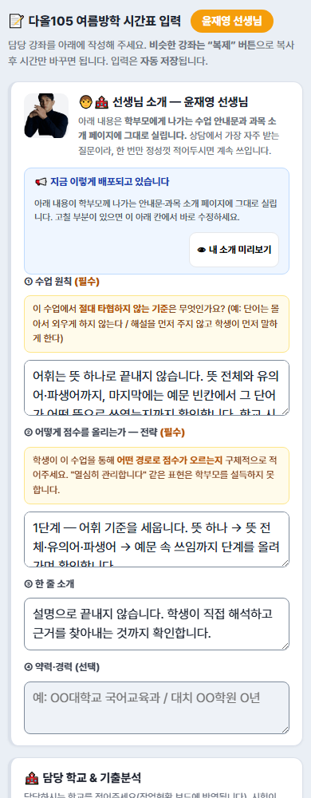
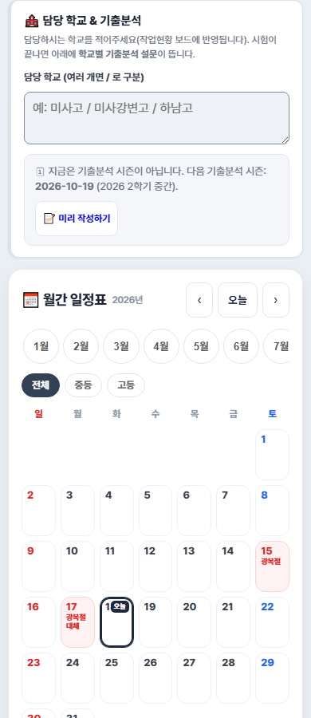
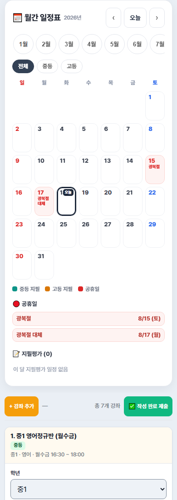
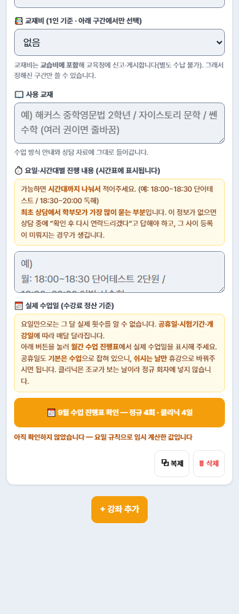
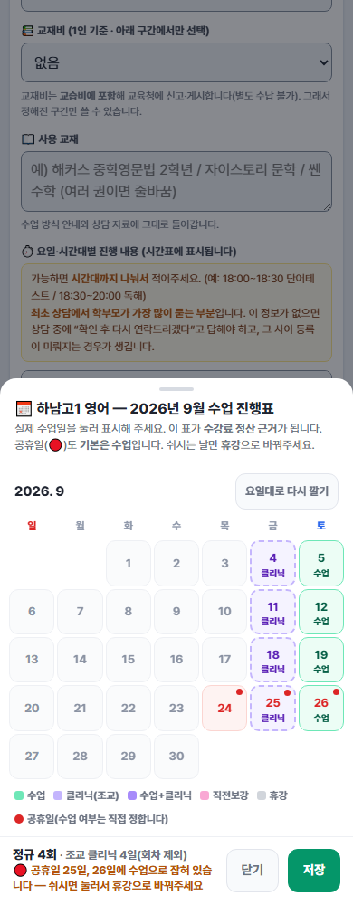
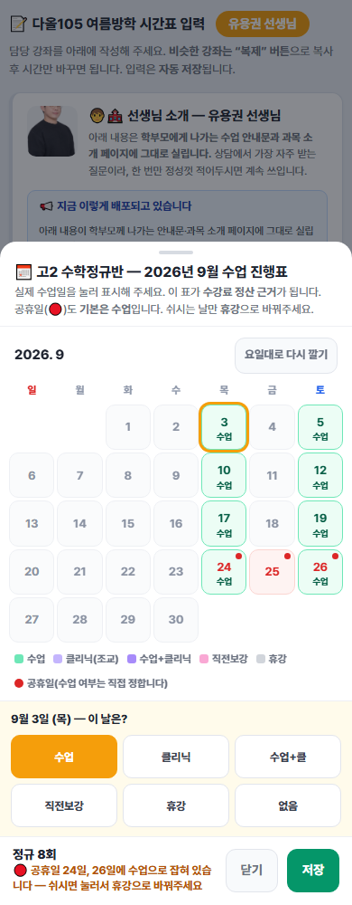

실제 화면을 그대로 캡처해 순서대로 담았습니다. 처음이셔도 따라오시면 됩니다.
카톡으로 받으신 내 이름 전용 링크를 누르시면 됩니다. 로그인은 없습니다.

맡고 계신 학교를 적어주세요. 여러 곳이면 / 로 구분합니다. (예: 미사고 / 하남고)

담당 학교 아래에 월간 일정표가 있습니다. 이번 달 지필평가와 공휴일이 함께 보입니다.

날짜 칸을 누르면 그 날의 일정이 달력 아래에 학교 이름 전체로 자세히 나옵니다 (같은 칸을 다시 누르거나 ✕를 누르면 닫힙니다). 휴대폰에서는 칸이 좁아 칩이 세 글자 줄임말로 보입니다 — 미강중=미사강변중, 은가중=은가람중, 미강고=미사강변고. 줄임말이 헷갈리면 그 날짜를 눌러 전체 이름으로 확인하세요.
강좌 카드의 수업 진행표 달력에도 담당 학교 시험날에 🟡 주황 점이 함께 표시되어, 일정표를 오가며 외울 필요 없이 그 자리에서 직전보강·휴강을 정할 수 있습니다.
지난달 내용이 이미 채워져 있습니다. 바뀐 것만 고치시면 됩니다.

주황색 버튼을 누르면 그 강좌 전용 달력이 열립니다. (아래는 토=수업, 금=클리닉인 강좌를 예로 든 화면입니다.)
요일 규칙대로 이미 칠해져 있으니, 다른 날만 고쳐주시면 됩니다.

날짜를 누르면 아래에 선택지가 나옵니다.
